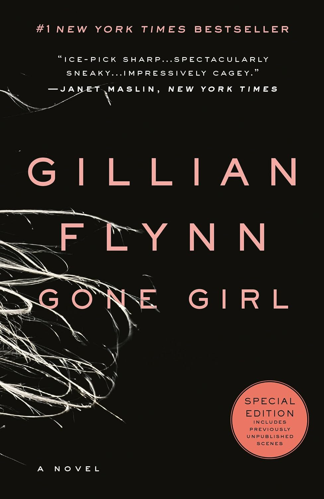

Essential comparisons

Book Wins
Verity
The manuscript's graphic passages create visceral dread the film's restraint cannot replicate.

Book Wins
Reminders of Him
Hoover's dual perspective and Kenna's letters carry emotional weight the film cannot replicate.

Book Wins
Dune
Herbert makes Paul's complicity explicit; the films leave it ambiguous.

Book Wins
The Shining
King's Jack is corrupted by evil; Kubrick's Jack already is evil.

Tie
Gone Girl
Pike's face owns the screen; Flynn's Amazing Amy owns the page.

Book Wins
Atonement
The metafictional ending only works on the page.